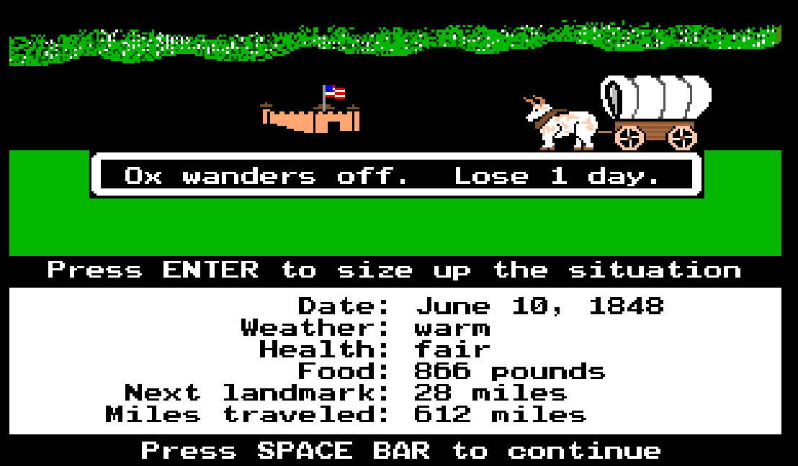

The graphics are extremely simple utilizing basic 8-bit limited color palet and pixelized characters, animals, scenery, wagon, rivers, forts, and landmarks. Even with the limited graphics, the text-based formatting of the game allows you get the sense of adventure wondering what the next landmark, illness, or issue will occur next.
The start screen gives you 6 options.
By selecting the 1st option you kick of the game, but lets talk about the other options for minute.
In option 2, the games discusses your journey through the game as well as some keys to control sound and exiting the game and finally the credit to the software engineers responsible for the game development.


Option 3 allows you to see the top scoring ten players of all time for the game.
If you would like turn the sound off before even begininning the game you can selection option 4. I did not provide a screenshot, it's self explanatory.
The management options are located in option 5 from the start screen.
Once you decide to start the game, there are 3 occupations you can choose to be. A banker will provide you with the most money to begininng, meaning you can start with more food and supplies making the journey easier. However, by choosing the banker you will not gain as many points for your achievements at the end. A carpenter has a moderate amount of money for food and supplies and will gain a moderate amount of points at completion of the trails. A farmer will provide you with the least amount of money for food and supplies, but will reap the most points in the end.
After choosing your occupation, you are taken the following screens where you name the leader of the group and the group members.
Now that you have your group members names sorted, you need to decide when you want to leave. Leaving too early can cause issues like cold weather, blizzards, increased illness, and scarce food for the oxen. Leaving too late can cause issues like extremely hot weather, drought leading to dehydration for your group and oxen.
There are 3 occupations you can choose to be. A banker will provide you with the most money to begininng, meaning you can start with more food and supplies making the journey easier. However, by choosing the banker you will not gain as many points for your achievements at the end. A carpenter has a moderate amount of money for food and supplies and will gain a moderate amount of points at completion of the trails. A farmer will provide you with the least amount of money for food and supplies, but will reap the most points in the end.
Before setting off you need to purchase supplies. As mentioned before you have a set amount of money based on your profession to stock up on a sufficient amount of oxen, food, clothing, ammunition for hunting (in the event you run low on food rations), and spare parts. This is mostly subjective but there are suggestions for each on the amount.
Now that you have your supplies, we set off!
Before leaving we view our group stats:
Everytime you leave a landmark or new location the game will notify you of the distance to the next location.
Unfortunately for me, one of my group members got the measles right out of the gate!
A few days after setting of we arrive at the first landmark! We are given the option to look around, if you select yes you are show a dipiction of the landmark or fort (I choose to do this later in the game).
At our first landmark we need to cross a river. The game will give some information about width depth to help you make a decision about your method of crossing.

You may not always make the right choice... I chose to float across the fiver and while Dan recovered from the measles, he tragically drown.
While traversing the trail you can run into all types of weather as mentioned before, about one week into travel I encounter a severe storm and lose 1 day of travel.
Because there were no exact maps at the time, you can often lose track of where you are and lose a few days of travel.
My ox decided to wander off!! I loose a day but good thing I have more oxen than we need.
In the beginning you have he option to purchase extra parts for the wagon. Well good thing I did since on June 10th I break the tongue of the wagon.

It is also possible to find items along the trail from other wagons.
Once I arrive at Fort Hall I do take the option to look around and talk to some other people at the fort.

In the end I ultimately make it to Oregon!
While I did make it to Oregon the road was not easy, I lost three of my group members to illness or drowning and encountered some rough weather, broken wagon parts, and illness.
The settings are minimal, there are no sounds to the game but you can control how much the group eats (“filling”, “measly”, “barely”) but that is about all. You travel along a linear path from Missouri to Oregon passing key landmarks, rivers, and forts. You are not able to explore anything around the landmarks but can shop at local stores at the forts to replenish supplies.
You are placed in the role of leader. You enter your name and select your profession but have no true characteristics. You can also name the rest of your party but do not control them. What you can control is the management of the entire party’s health, supplies, and pace. The NPC players are people or Native American Indians in the forts. You can talk to a player chosen by the game who will usually tell you something about the town or culture.
The main challenge is ensuring that your party has adequate food and supplies, and are travelling at the correct pace. Going too fast can cause exhaustion and illness (which can lead to the death of party members) but going too slow will deplete food resources and supplies before the ability to restock presents itself.
There are no objects that you can directly observe or pick up. You are able to trade at the forts to gain supplies without having to purchase them. The objects you cannot continue without are: oxen, wagon wheels, wagon axles, and wagon tongues.
The game does not really break the fourth wall or comment on itself. It’s a straight play simulation.
The game reflects on the historical pioneer experience of the westward expansion in 19th century America. It touches on themes of survival and manifest destiny. By today’s standards, the game lakes representation. The main characters are implied to be white settlers. There are some interactions with Native Americans throughout the game, someone of which state their distaste of their lands being disrupted by the influx of settlers.
There have been some remakes to the Oregon Trail game but some changes to improve the game would be:
This work is licensed under CC
BY-NC-SA 4.0